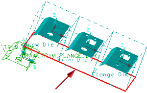

打开 DFM 顾问
-
点击冲模工程工具条上的检查工具
 ，然后点击 DFM 顾问 。
，然后点击 DFM 顾问 。在 DFM 顾问对话框中，完整分析已完成(位于对话框的顶部)目前处于不可用状态，直到使用指定的采样率对所有对象运行全部准则。
-
注意到由于只有一个工艺路线，因此已选择冲模工艺路线 选择步，并高亮显示工艺路线。

冲模工艺路线选择步允许您选择表示加工部件的整个冲模过程的冲模工艺路线特征，以及表示加工每个阶段中钣金状态的几何体。
-
在准则列表中选择修剪类别。
在修剪；类别下方的选项旁都出现了复选标记。
准则列表让您指定要执行的加工检查。
-
使用默认的厚度以及屈服强度值。
-
在面板列表中选择内部。
-
在采样率列表中选择精细。
-
清除分析所有 DFM 特征复选框。
-
点击应用。
您现在可以选择特定的特征来进行分析。